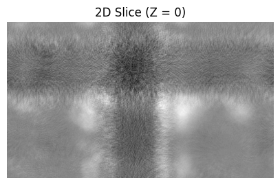
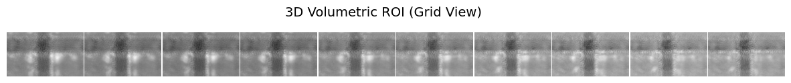

Core data structures and classes for biomedical imaging, integrating MONAI’s MetaTensors with fastai’s transform pipelines.
Data Types
Specialized classes to represent various bioimaging data structures, facilitating seamless integration with both fastai and MONAI machine learning workflows.
MetaResolver: A custom metaclass designed to resolve conflicts between PyTorch tensor bases and fastai’s custom tensor types, enabling safe multiple inheritance for our core medical data structures.
The MetaResolver class addresses metaclass conflicts, ensuring compatibility across different data structures. This is particularly useful when integrating with libraries that have specific metaclass requirements.
Example: Using MetaResolver to create a custom tensor class without metaclass conflicts
class CustomBioTensor(TensorImage, metaclass=MetaResolver):"""A custom tensor class that safely inherits from fastai's TensorImage."""pass# Initialize our custom tensormy_tensor = CustomBioTensor([1.0, 2.0, 3.0])print(f"Type: {type(my_tensor).__name__}")print(f"Is PyTorch Tensor? {isinstance(my_tensor, torchTensor)}")
Type: CustomBioTensor
Is PyTorch Tensor? True
Base Data Classes
BioDataClass acts as the foundational tensor class for all bioMONAI data types. Inheriting from MONAI’s MetaTensor, it seamlessly carries complex medical metadata while behaving exactly like a standard PyTorch Tensor.
Metadata tracking: Carries affine matrices, spatial shapes, and patient data through the pipeline via the .meta dictionary.
fastai integration: Includes built-in methods (like get_datablock) to easily hook into fastai’s DataBlock API.
Flexible instantiation: Can be initialized directly, from standard PyTorch Tensors (from_tensor), or from existing MONAI MetaTensors (from_metatensor).
Example: Creating a BioDataClass from standard tensors and MetaTensors
# 1. Initialize directly from a standard PyTorch Tensor with custom metadata# We use a 2D tensor to simulate a small image patchbase_tensor = torchrand((10, 10))bio_data = BioDataClass.from_tensor(base_tensor, meta={"patient_id": "12345", "modality": "MRI"})print(f"BioDataClass shape: {bio_data.shape} | Metadata: {bio_data.meta}")# 2. Convert an existing MONAI MetaTensor into a BioDataClassmt = MetaTensor(x=torchones(5, 5), meta={"space": "RAS"})bio_from_mt = BioDataClass.from_metatensor(mt)print(f"Converted from MetaTensor: {type(bio_from_mt).__name__}")# --- Visualization ---fig, axes = plt.subplots(1, 2, figsize=(6, 3))# Plot the BioDataClass tensoraxes[0].imshow(bio_data.numpy(), cmap='magma')axes[0].set_title(f"BioDataClass\nID: {bio_data.meta['patient_id']}")axes[0].axis('off')# Plot the converted MetaTensoraxes[1].imshow(bio_from_mt.numpy(), cmap='gray', vmin=0, vmax=2)axes[1].set_title(f"Converted MetaTensor\nSpace: {bio_from_mt.meta['space']}")axes[1].axis('off')plt.tight_layout()plt.show()
BioDataClass Class Attributes & Parameter Reference
Method
Parameters
Description
from_tensor
x: torch.Tensor, meta: dict \| None
Creates a BioDataClass instance from a standard PyTorch tensor and an optional metadata dictionary.
from_metatensor
x: MetaTensor
Converts an existing MONAI MetaTensor directly into a BioDataClass, preserving all metadata.
set_transforms
transforms
Class method to set default transforms applied to this data type.
get_datablock
None
Returns a fastai TransformBlock configured to load this specific data type.
Images
BioImageBase acts as the core base class for biomedical images within bioMONAI. It combines the functionality of PyTorch tensors, MONAI’s MetaTensor, and fastai’s visualization utilities (TensorImage).
Unified Loading: Seamlessly loads multidimensional image data directly from raw file paths (from_source) or dictionaries (from_dict).
Metadata & ROI: Manipulates image metadata and extracts Regions of Interest (ROI) via index dictionaries on the fly.
Native Visualization: Includes a built-in .show() method to visually render both 2D slices and 3D volumetric grids directly in Jupyter notebooks.
Note: Internal pure loaders (get_loader, get_dict_loader) return standard MONAI MetaTensor objects for maximum compatibility. High-level methods like from_source and from_dict wrap these outputs directly into BioImageBase instances so you can immediately use fastai’s .show() method.
image_path ='./data_examples/example_tiff.tiff'# Silence the harmless TIFF 'ResolutionUnit' warning to keep the console cleanwith warnings.catch_warnings(): warnings.simplefilter("ignore")# 1. Load an entire volume and inspect itprint("--- Full Volume ---") img_full = BioImageBase.from_source(image_path)print(f"Shape: {img_full.shape} | Type: {type(img_full).__name__}")print(f"Original Channels format: {img_full.meta.get('layout')}")# 2. Load a 2D Region of Interest (ROI) and display itprint("\n--- 2D ROI ---") roi_2d = BioImageBase.from_source( image_path, channels="CYX", ind_dict={'Z': 0, 'Y': slice(0, 300)} # First Z-slice, cropped Y )print(f"Shape: {roi_2d.shape}")# 3. Load a 3D ROI and display it as a gridprint("\n--- 3D Volumetric ROI (Grid View) ---") roi_3d = BioImageBase.from_source( image_path, channels="ZYX", ind_dict={'Z': range(10), 'Y': slice(0, 300)} # First 10 Z-slices, cropped Y )print(f"Shape: {roi_3d.shape}")# 4. Show the images using the built-in fastai/bioMONAI show methodroi_2d.show(title="2D Slice (Z = 0)", figsize=(5, 5))plt.show() # Ensure the 2D plot renders cleanly before the grid# A much shorter figsize (e.g., 15, 1.5) matches the 10:1 aspect ratio of the image striproi_3d.show(figsize=(15, 1.5)) plt.suptitle("3D Volumetric ROI (Grid View)", fontsize=14) plt.show()
--- Full Volume ---
Shape: torch.Size([1, 96, 512, 512]) | Type: BioImageBase
Original Channels format: CZYX
--- 2D ROI ---
Shape: torch.Size([1, 300, 512])
--- 3D Volumetric ROI (Grid View) ---
Shape: torch.Size([10, 300, 512])


BioImageBase Class Attributes & Parameter Reference
Loads an image from a path directly into a BioImageBase instance.
from_dict
x: dict, keys, **kwargs
Loads images from dictionary paths, replacing them with BioImageBase instances in-place.
get_loader
**kwargs
Returns a callable that loads a source into a standard MONAI MetaTensor.
get_dict_loader
**kwargs
Returns a callable that processes a dictionary, loading target keys as MetaTensors.
show
ctx, figsize, title, **kwargs
Visually renders the image tensor (automatically supports 2D slices and 3D grids).
BioImage
BioImage is a specialization of BioImageBase specifically tailored for standard 2D and 3D biomedical images. By defaulting the channel layout to "CYX", it automatically handles the squeezing of unnecessary dimensions and sets the stage for standard 2D/3D transformations.
Default Layout: Sets _channels = "CYX" (Channels, Y, X) to streamline 2D image processing.
Direct Inheritance: Inherits all powerful features from BioImageBase (like from_source, from_dict, and show).
Simplified Workflow: Ideal for datasets where Z-stacks or time dimensions have already been reduced or are not required.
Example: Using BioImage to load a 2D Region of Interest
image_path ='./data_examples/example_tiff.tiff'# Silence the harmless TIFF 'ResolutionUnit' warning to keep the console clean.with warnings.catch_warnings(): warnings.simplefilter("ignore")# Load a 2D Region of Interest (ROI) directly as a BioImage image_2d = BioImage.from_source( image_path, ind_dict={'Z': 0, 'Y': slice(0, 300)} )print(f"Type: {type(image_2d).__name__}")print(f"Shape: {image_2d.shape}")# Display the 2D imageimage_2d.show(title="BioImage: Z = 0", figsize=(5, 5))plt.show()
BioVolume is a specialization of BioImageBase designed explicitly for handling 3D volumetric images. By defaulting to the "CZYX" channel layout, it ensures that volumetric data is parsed with the correct spatial dimensions, making it immediately ready for 3D spatial transforms.
Direct Inheritance: Retains all the powerful loading and dictionary-handling capabilities of BioImageBase.
Volumetric Visualization: Works out-of-the-box with the native .show() method to automatically render an optimal 2D representation of your 4D data tensor.
Example: Using BioVolume to load a 3D Region of Interest
image_path ='./data_examples/example_tiff.tiff'# Silence the harmless TIFF 'ResolutionUnit' warning to keep the console clean.with warnings.catch_warnings(): warnings.simplefilter("ignore")# Load a 3D Region of Interest (ROI) (e.g., the first 10 Z-slices, cropped Y) volume_3d = BioVolume.from_source( image_path, ind_dict={'Z': range(10), 'Y': slice(0, 300)} )print(f"Type: {type(volume_3d).__name__}")print(f"Shape: {volume_3d.shape}")# Display the 3D volume representation# Using a square figsize since CZYX renders as a single aggregated viewvolume_3d.show(title="BioVolume: 3D ROI (CZYX Layout)", figsize=(6, 6))plt.show()
BioMIP represents a 3D image volume as a 2D image using Maximum Intensity Projection. It automatically squashes the Z-axis (depth) by taking the maximum voxel value along that dimension on the fly.
Automatic Projection: Inherits from BioImageBase but automatically applies a projection operation over the Z-axis during loading.
Visualization Ready: Ideal for visualizing thick volumetric data (like fluorescent microscopy Z-stacks) in a flat, 2D format for quick assessments and presentations.
Metadata Updating: Automatically updates the internal .meta['layout'] dictionary from "CZYX" to "CYX" to accurately reflect the dimensionality reduction.
The BioMIP class represents a 3D image stack as a 2D image using maximum intensity projection. This is particularly useful for visualizing volumetric data in a 2D format, aiding in quick assessments and presentations.
Example: Generating a Maximum Intensity Projection from a 3D volume
image_path ='./data_examples/example_tiff.tiff'# Silence the harmless TIFF 'ResolutionUnit' warning to keep the console clean.with warnings.catch_warnings(): warnings.simplefilter("ignore")# Load the volume and automatically project it to 2D image_mip = BioMIP.from_source(image_path)print(f"Type: {type(image_mip).__name__}")print(f"Projected Shape: {image_mip.shape}")print(f"Final Layout: {image_mip.meta.get('layout')}")# Display the resulting 2D projectionimage_mip.show(title="Maximum Intensity Projection", figsize=(5, 5))
Type: BioMIP
Projected Shape: torch.Size([1, 512, 512])
Final Layout: CYX
The expected initial layout before the Z-axis is squashed.
_show_args
dict
{"cmap": "gray"}
Default visualization styling applied when rendering the 2D projection.
(Note: Inherits loading methods like from_source from BioImageBase, automatically applying the projection step)
BioVideo
BioVideo is a specialization of BioImageBase designed specifically for temporal or video data. By setting the default channel layout to "CTYX", it ensures that time-series images (like live-cell imaging or standard video files) are parsed correctly for spatiotemporal transforms.
Temporal Focus: Sets _channels = "CTYX" (Channels, Time/Frames, Height/Y, Width/X) to explicitly preserve the sequence of frames.
Direct Inheritance: Retains all loading, dictionary-handling, and metadata-tracking capabilities of BioImageBase.
Video Processing: Ideal for pipelines dealing with live-cell imaging, behavioral videos, or dynamic medical imaging (e.g., cine MRI).
This is the class that: - uses image_reader - handles transforms - returns MetaTensor-backed images
Example: Loading temporal/video data using BioVideo
image_path ='./data_examples/example_tiff.tiff'with warnings.catch_warnings(): warnings.simplefilter("ignore")# Load data as a temporal sequence video_seq = BioVideo.from_source(image_path)print(f"Type: {type(video_seq).__name__}")print(f"Shape: {video_seq.shape}")print(f"Layout: {video_seq.meta.get('layout')}")# Display the 4D video tensor representationvideo_seq.show(figsize=(6, 6))plt.title("BioVideo: Full Sequence (CTYX Layout)", fontsize=14)plt.show()
BioMultiChannel is a specialized class designed for handling multi-channel 2D and 3D images, assuming a "CZYX" layout by default.
Automatic Flattening: Automatically merges the Channel (C) and Depth (Z) dimensions (merge_cd=True) upon loading.
Microscopy Ready: Particularly useful in microscopy, where multi-channel 3D stacks are often flattened or interleaved into a single sequential axis to simplify downstream processing.
Specialized Visualization: Overrides the base .show() method to use show_multichannel, expertly handling the rendering of composite or interleaved channel grids.
Example: Loading and flattening a multi-channel 3D stack
image_path ='./data_examples/example_tiff.tiff'with warnings.catch_warnings(): warnings.simplefilter("ignore")# Load a subset of the image (First 5 Z-slices).# BioMultiChannel will automatically merge the C and Z-depth dimensions. image_mlt = BioMultiChannel.from_source( image_path, ind_dict={'Z': range(5), 'Y': slice(0, 300)} )print(f"Type: {type(image_mlt).__name__}")print(f"Shape: {image_mlt.shape}")print(f"Layout: {image_mlt.meta.get('layout')}")# Display the composited multi-channel image# Using a square figsize since show_multichannel overlays them into a single viewimage_mlt.show(figsize=(6, 6))plt.title("BioMultiChannel: Composited Channels (5 Slices)", fontsize=14)plt.show()
The expected initial layout before merging operations.
merge_cd
bool
True
If True, flattens the Z (depth) dimension into the C (channel) dimension during loading.
interleaved
bool
True
Determines the permutation order when merging. If True, channels and depths are interleaved sequentially.
Categorical Labels
BioLabel is a specialized data class for handling categorical data, such as classification targets. Built on top of fastai’s Categorize transform, it automatically manages vocabulary creation, handles sorting, and seamlessly maps textual labels to integer IDs (and vice versa).
Vocabulary Management: Automatically builds, sorts, and maintains a unique vocabulary from your dataset.
fastai Integration: Leverages the native Categorize transform, ensuring full compatibility with standard deep learning pipelines.
Flexible Loading: Fully supports both standard sequence and dictionary-based data pipelines (from_source and from_dict).
Example: Encoding and decoding categorical labels using BioLabel
# 1. Initialize the label encoder with a specific vocabulary# (Note: duplicates are removed and the vocabulary is sorted alphabetically by default)label_encoder = BioLabel.get_label(vocab=['malignant', 'benign', 'benign', 'normal'])print(f"Generated Vocabulary: {list(label_encoder.vocab)}")# 2. Encode a string label into an integer IDencoded_id = label_encoder('malignant')print(f"Encoded ID for 'malignant': {encoded_id}")# 3. Decode the integer ID back to the original stringdecoded_label = label_encoder.decode(encoded_id)print(f"Decoded Label for ID {encoded_id}: {decoded_label}")
Generated Vocabulary: ['benign', 'malignant', 'normal']
Encoded ID for 'malignant': TensorCategory(1)
Decoded Label for ID TensorCategory(1): malignant